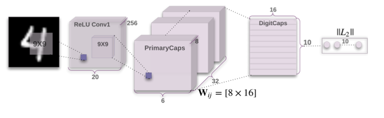

From Yannic’s blog, I plan to follow his steps for reading a paper, which can be found here:
STEP1 Read the title and make an opinion of what’s in the paper (e.g., the area, the task)
‘Dynamic Routing Between Capsules’. The title seems to be able to be split up into two pieces: the Capsule and the Dynamic Routing between. From the title alone, it is hard to discern too much, but the title begs the question, why does the routing need to be dynamic, and what is a capsule. Ok lets see what we get.
STEP2 Read the abstract well and form a hypothesis of
1. What's new in the paper?
2. Do you have a clear *overview* about what the paper is all about?
In the first sentence the abstract explains my first question, though quite technically:
A capsule is a group of neurons whose activity vector represents the instantiation parameters of a specific type of entity such as an object or an object part.
Ok, so a capsule is a group of vectors representing an object or part thereof.
We use the length of the activity vector to represent the probability that the entity exists and its orientation to represent the instantiation parameters
The length and angle are important, and make up the meaning of these groups of neurons called capsules.
Active capsules at one level make predictions, via transformation matrices, for the instantiation parameters of higher-level capsules.
These transformation matrices mean nothing to me now, but I will flag them for explanation later. Note the levels of capsules.
When multiple predictions agree, a higher level capsule becomes active.
In four sentences, they have identified key areas of the new architecture that I’ll have to understand, and if I can internalize those four sentences, I’m guessing I’m well on my way to understanding the paper.
They describe some MNIST metrics, and conclude on the first part of the title:
we use an iterative routing-by-agreement mechanism: A lower-level capsule prefers to send its output to higher level capsules whose activity vectors have a big scalar product with the prediction coming from the lower-level capsule.
So it is notable that the routing is iterative, done via agreement.
This abstract has given us a clear look at what is new, for me, it is both this idea of a capsule group of neurons, and a routing-by-agreement. Let’s see where this paper goes. On to step 3.
STEP3. Look at the images and extract a set of “questions” about what is not clear about their method from the images. Now your job is to answer these questions by reading the paper.
There are only two figures devoted to the structure of the architecture, so they should give some insight into the design.


This paper deals exclusively with MNIST, so that is important to note.
Also figure 2 is clear that they decode the internal structure too.
I’m sure that learning to grasp the idea from the pictures comes with time. At this point, the pictures are still pretty cryptic and do not provide me with a number of questions to answer by reading the paper, but it does help to consider what could be going on and using my imagination to read the paper more inquisitively and critically.